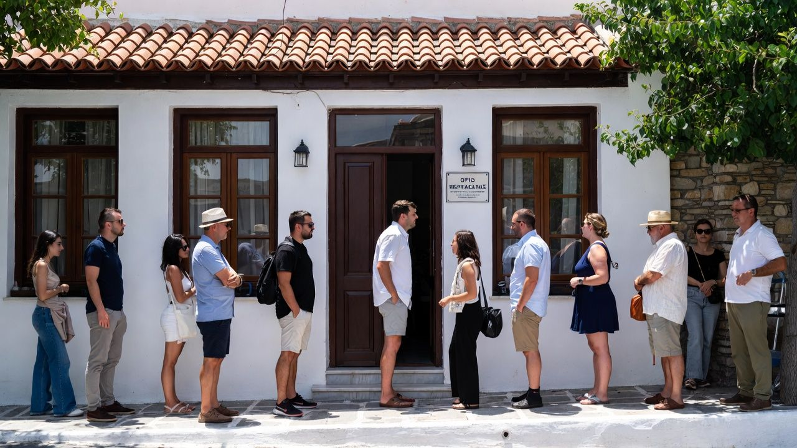

Geduld is een schone zaak
Dit gezegde geldt niet altijd voor de Grieken. Ze hebben een hekel aan wachten of in de rij staan. Zolang ze zelf niet vooraan staan, proberen ze voortdurend – soms onbeschaamd – die koppositie te veroveren.
Geduld is een schone zaak – maar dat gezegde geldt hier niet altijd.

Dit gezegde geldt niet altijd voor de Grieken. Ze hebben een hekel aan wachten of in de rij staan. Zolang ze zelf niet vooraan staan, proberen ze voortdurend – soms onbeschaamd – die koppositie te veroveren.
Of ze creëren een tweede rij naast de eerste, waar ze uiteraard weer vooraan komen te staan. Bij de bank, in de winkel of in het ziekenhuis – het voordringen kent geen grenzen. Dit fenomeen komt overal voor.
Patience is a virtue – but that saying doesn’t always apply here.
This saying doesn’t always hold true for the Greeks. They hate waiting or standing in line. As long as they’re not at the front themselves, they keep trying – sometimes shamelessly – to claim that top spot.
Or they create a second queue next to the first – where of course they end up at the front again. At the bank, in the shop or at the hospital – queue jumping knows no bounds. This happens everywhere.
Geduld ist eine Tugend – aber dieses Sprichwort gilt hier nicht immer.
Dieses Sprichwort gilt nicht immer für die Griechen. Sie hassen das Warten oder Anstehen. Solange sie selbst nicht vorne stehen, versuchen sie ständig – manchmal schamlos – den vordersten Platz zu erobern.
Oder sie bilden eine zweite Schlange neben der ersten – und stehen dort natürlich wieder vorne. Bei der Bank, im Laden oder im Krankenhaus – Vordrängeln kennt keine Grenzen.
La pazienza è una virtù – ma questo detto qui non vale sempre.
Questo detto non vale sempre per i greci. Odiano aspettare o fare la fila. Finché non sono davanti, cercano continuamente – a volte senza pudore – di conquistare il primo posto.
O creano una seconda fila accanto alla prima, dove ovviamente si ritrovano di nuovo davanti. In banca, al negozio o in ospedale – saltare la fila non ha limiti.
Sabır erdemdir – ama bu söz burada her zaman geçerli değil.
Bu söz Yunanlar için her zaman geçerli değil. Beklemekten veya sırada durmaktan nefret ederler. Kendileri önde olmadıkları sürece – bazen utanmadan – o birinci yeri ele geçirmeye çalışırlar.
Ya da birinci sıranın yanında ikinci bir sıra oluştururlar – ve tabii orada yine öne geçerler. Bankada, dükkânda veya hastanede – sıra ihlalinin sınırı yoktur.
La paciencia es una virtud – pero ese dicho aquí no siempre vale.
Este dicho no siempre se cumple con los griegos. Odian esperar o hacer cola. Mientras no estén delante, intentan sin parar – a veces sin vergüenza – conquistar ese primer puesto.
O crean una segunda fila al lado de la primera, donde por supuesto vuelven a quedar delante. En el banco, la tienda o el hospital – colarse no tiene límites.